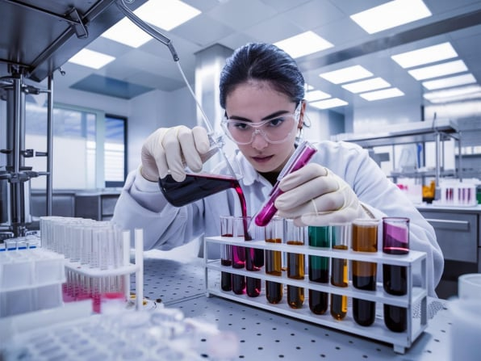
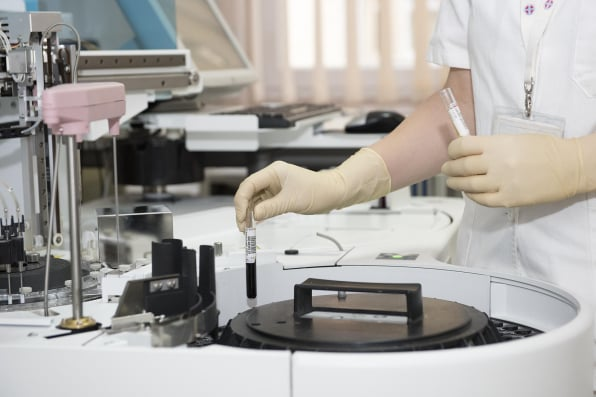
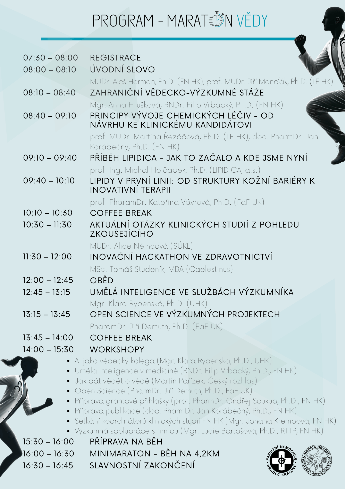

Inspirace pro mladé výzkumníky od zkušenějších kolegů.
Přednášky odborníků z aplikační sféry a ukázky možností spolupráce.

Reálné příklady z praxe a technologie zavedené do skutečného užívání.
Praktické workshopy zaměřené na vědecko-výzkumná témata.

Workshop nabídne praktický pohled na to, jak může umělá inteligence efektivně podpořit celý proces vědecké práce – od brainstormingu, přes rešerše a formulaci hypotéz až po tvorbu odborných článků, abstraktů a prezentací. Účastníci si sami budou moct vyzkoušet práci s moderními nástroji a získají tipy na to, jak AI využívat smysluplně, eticky a s ohledem na legislativní rámce. Vhodné pro kohokoliv. Vlastní notebook vítán, avšak workshop je možné absolvovat i bez praktického zapojení.
Okruhy témat:
• Shrnutí z přednášky (pro ty, kdo nebyli) - stručně o tom, co je AI a jak funguje.
• Etika, zákon, omezení - co AI smí a nesmí (a co smíme my a co bychom neměli s AI dělat).
• AI jako autor článku vs. AI jako pomocník, co nikdy nespí.
• Kde začít a jak na AI bezpečně.
• Ukázky:
Efektivní prompty, jak se ptát a jak ověřit odpovědi.
Možnosti DeepResearch (ChatGPT versus další nástroje).
Rešerše a shrnutí článků, automatické sumarizace, výpisy závěrů.
Korekce, stylizace, jazyková úprava, kontrola faktů.
Tvorba obrázků (nejen) do prezentace.
Tvorba prezentace pomocí AI.
Ukázka využití vlastního AI avatara.
Tvorba vlastního “vědeckého agenta”.
Tipy a triky.
Otázky a odpovědi, diskuse.
Umělá inteligence se stává běžným nástrojem dnešních dní a stejně jako
jiné obory, mění i medicínu. Jak ale AI skutečně funguje a kde má smysl
ji použít? Podíváme se na základy použití jazykových modelů či
strojového učení pro diagnostiku i predikce. Určitě se dotkneme i
analýzy obrazových dat a dozvíte se něco o nástrojích, které vám mohou
být nápomocné s tvorbou textů či prezentací.
Vědecké objevy zůstávají skryté, pokud o nich nikdo neví. V éře podcastů, sociálních sítí a umělé inteligence už nestačí publikovat jen v odborných časopisech. Jak ale svůj výzkum prezentovat srozumitelně a poutavě napříč různými médii? Workshopem vás provede Martin Pařízek, vedoucí vědecké redakce Českého rozhlasu, který odhalí, jak zaujmout novináře i veřejnost. Dozvíte se, jak připravit poutavý rozhovor, vytvořit podcast nebo využít AI nástroje pro zjednodušení složitých témat. Workshop je určen pro lékaře, výzkumníky i PR pracovníky, kteří chtějí svou vědeckou práci dostat do širšího povědomí a naučit se komunikovat vědu nejen odborné komunitě, ale i veřejnosti.
Workshop bude rozdělen do dvou částí. V první části bude ukázána možnost ukládání výsledků výzkumu do obecného repozitáře Zenodo a na co si dát pozor. V druhé části bude ukázka práce s online nástrojem pro tvorbu Data Management Plan – dobrý pomocník, ale zlý pán.
Cílem workshopu je seznámit se s obecnými principy přípravy grantové žádosti se zaměřením zejména na tuzemské agentury GACŘ (Grantová agentura České republiky) a AZV (Agentura pro zdravotnický výzkum České republiky), budou prezentovány lektorovy zkušenosti jak s přípravou úspěšných žádostí, tak s jejich hodnocením z pohledu hodnotitele. V rámci workshopu se budou účastníci zabývat konkrétními přihláškami, proto prosíme zaslat podklady např. neúspěšných přihlášek na adresu ondrej.soukup@fnhk.cz. Doporučená je alespoň základní zkušenost účastníků s grantovými aplikacemi.
Cílem workshopu "Příprava publikace" je konzultace s účastníky z řad vědecké komunity na témata 1) kritického zamýšlení nad směřováním vlastního výzkumu, 2) publikování dosažených dat v prestižních časopisech s impaktním faktorem a 3) doporučená komunikace s časopisem na úrovni editora. Zájemci o workshop mohou posílat své rozpracované/nepublikované manuskripty ke konzultaci na adresu jan.korabecny@fnhk.cz.
Oddělení klinických studií Vás opět srdečně zve na přátelské setkání koordinátorů a datamanažerů klinických studií FN HK.
Workshop „Jak výzkumně spolupracovat s firmou“ je určen lékařům, kteří chtějí rozvíjet své odborné nápady ve spolupráci s komerční sférou. Účastníci se dozvědí, jaké typy spolupráce jsou možné – od společného výzkumu po výzkum na zakázku. Zaměříme se také na to, jak chránit své know-how, správně nastavit důvěrnost pomocí NDA a jak si vyjednat spravedlivou odměnu. Cílem workshopu je posílit kompetence lékařů při vstupu do výzkumně-průmyslových partnerství.


prof. MUDr. Martina Řezáčová, Ph.D.


Biobanka
Biobanka nabízí řešitelům projektů možnost zamrazit biologické vzorky po dobu řešení jejich výzkumných projektů. Cílem je standardizovat ukládání a distribuci vzorků jednotlivých alikvotů pro experimentální práci. Informace o vzorcích jsou vkládány přímo do systému OpenLIMS a zasílány cestou NIS řešitelům projektů. Vzorky lze po skončení projektu převést do projektu navazujícího. Lze také požádat o poskytnutí vzorků z jiných probíhajících nebo právě ukončených projektů.
Mgr. Iva Karešová
iva.karesova@fnhk.cz
+420 495 833 623

Při plánování a přípravě výzkumného projektu se můžete snadno ocitnout na poli klinických studií. Stačí splnit 3 jednoduché podmínky. Sledovat v rámci projektu vlastnosti/léčivého přípravku/ú (včetně registrovaných), chránit zařadit lidské subjekty a provádět jakoukoliv intervenci (např. randomizaci). Oddělení poskytuje konzultace projektů a pomáhá s jejich přípravou a realizací, pokud svou povahou odpovídají definici klinických studií. Oddělení také spolupracuje s klinikami na řízení agenty a koordinaci komerčních klinických studií externích zadavatelů ve FN HK.
Mgr. Johana Krempová
johana.krempova@fnhk.cz
+420 601 087 319

Výzkumná skupina zabývající se využitím moderních separačních technik (vysokoúčinná kapalinová chromatografie, ultracentrifugace) v klinickém výzkumu a praxi. Skupina spolupracuje s lékaři FN HK, ale i dalšími výzkumnými týmy v ČR i zahraničí a nabízí vývoj nových metodik pro stanovení cílových analýt na míru, naměření pilotních dat pro budoucí projekty, spolupráci na přípravě grantové přihlášky nebo spolupráci na klinických i analytických publikačních výstupech.
doc. RNDr. Lenka Kujovská Krčmová, Ph.D.
lenka.kujovska@fnhk.cz
+420 495 833 372

Chcete probrat potenciál svých vědeckých výsledků? Chcete se dozvědět více o možnostech přenosu poznatků a technologií na UK? CPPT je celouniverztní pracoviště zaměřené na podporu přenosu vědeckých poznatků a technologií do praxe. Koordinuje činnost inovačního skauta na každé fakultě, který zajišťuje komunikaci uvnitř univerzity a vyhledávání nových případů mezi vědeckými týmy.
Ing. Martin Kopeček, MEng, Ph.D.
kopecma@lfhk.cuni.cz
www.cppt.cuni.cz

AI Website Generator